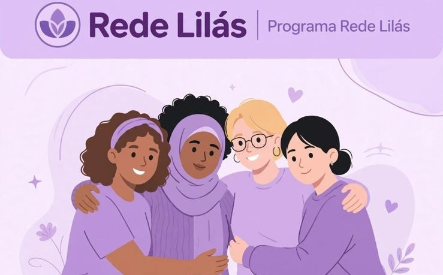
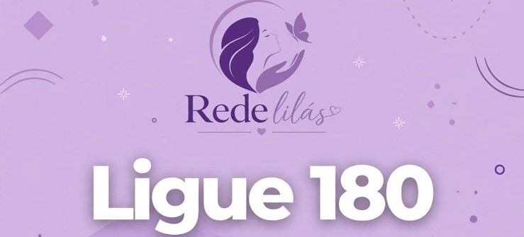

Informação também é proteção
Conheça seus direitos
A Lei Maria da Penha protege mulheres contra a violência doméstica e familiar. A violência pode ser física, psicológica, sexual, patrimonial ou moral.


O que a lei garante a você
Medida protetiva de urgência
O juiz pode, em até 48 horas, obrigar o agressor a sair de casa e proibir que ele se aproxime de você, da sua família, do seu trabalho e da escola dos seus filhos.
Você não entrega a intimação
Para a sua segurança, quem entrega é a polícia ou o oficial de justiça, nunca você.
Sem encontro com o agressor
Você não pode ser obrigada a ficar frente a frente com ele.
Atendimento especializado
Você tem direito a atendimento policial, de saúde e jurídico especializado, sem precisar pagar nada.
Você pode buscar ajuda quando houver
Ameaças, humilhações, controle ou isolamento.
Agressões, perseguição ou impedimento de sair.
Retenção de documentos, dinheiro ou objetos.
Qualquer contato ou relação sexual sem consentimento.
Onde procurar apoio
Você também pode procurar uma Delegacia da Mulher, a Defensoria Pública ou o Ministério Público.
Risco imediato.
Orientação e denúncia.
A culpa nunca é da vítima. Você tem direito a ser ouvida, protegida e atendida com respeito.